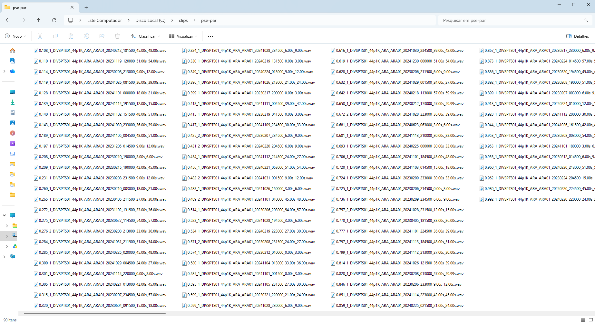
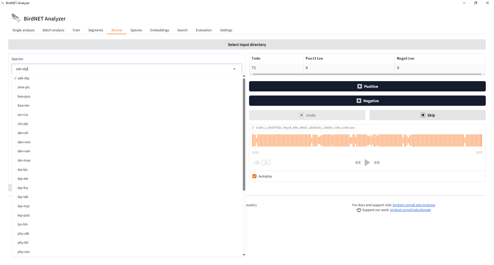
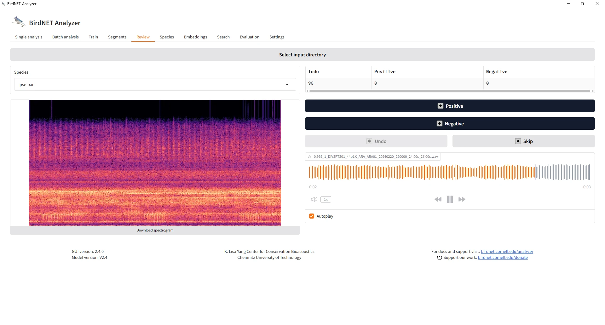
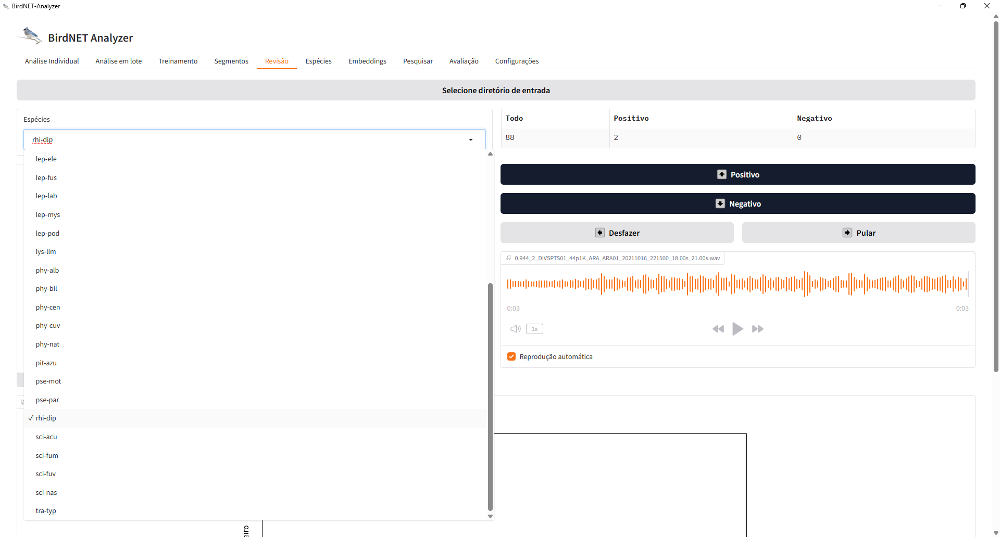

Revisão dos clipes na GUI do BirdNET
Source:vignettes/articles/pt/reviewing-in-the-gui.Rmd
reviewing-in-the-gui.RmdTradução. Este artigo é uma tradução da versão em inglês, que é a referência: Reviewing clips in the BirdNET GUI. Traduzido da versão 3.2.1 do pacote; se as duas divergirem, vale a versão em inglês.
A revisão manual da etapa 1 é feita fora do R, na aba Review
(Revisão) da GUI do BirdNET-Analyzer. Este artigo descreve essa revisão,
desde a pasta de clipes gravada por cut_clips() até as
pastas Positive e Negative que
classify_review() lê de volta. As capturas de tela foram
feitas com a versão 2.4.0 da GUI (modelo V2.4) no Windows, com clipes do
projeto FrogNet; o leiaute pode diferir em outras versões. A documentação
da GUI descreve como instalá-la e iniciá-la, e informa que a aba
Review (Revisão) implementa o fluxo de trabalho de Wood & Kahl
(2024).
A pasta de clipes
extract_validation_clips() (ou cut_clips())
grava uma pasta por espécie dentro de clips/, cada uma com
os clipes a revisar. O nome de cada clipe começa com seu score de
confiança e sua posição no ranking, seguidos do nome da gravação de
origem e do início e fim do clipe:

A GUI identifica as espécies pelos nomes dessas subpastas.
Escolha da espécie
Na aba Review (Revisão), Select input directory (selecionar
o diretório de entrada) aponta a GUI para a pasta clips. A
lista Species (Espécies) passa então a mostrar uma entrada por
subpasta, e os contadores indicam os clipes ainda a revisar
(Todo) e os já classificados como Positive
(Positivo) ou Negative (Negativo):

Revisão de um clipe
Cada clipe é exibido como um espectrograma, com um reprodutor de áudio (com Autoplay, o clipe é reproduzido assim que é aberto). O nome do clipe, com seu score, aparece acima da forma de onda. Positive (Positivo) e Negative (Negativo) classificam o clipe e passam ao seguinte; Undo (Desfazer) desfaz a última decisão e Skip (Pular) avança sem classificar:

Revise o clipe ouvindo-o, e não apenas pelo seu score: o score é
justamente o que a revisão pretende verificar. Nos desenhos aleatórios
de vignette("sampling-designs"), a ordem em que os clipes
são revisados não importa, mas todos os clipes de uma ocasião sorteada
devem ser revisados (ver
vignette("crywolf-integration")).
O painel de regressão
Depois que alguns clipes foram classificados, o painel Regression (Regressão) mostra uma regressão logística dos vereditos em função do score para a espécie selecionada, com os scores nos quais a probabilidade predita de uma detecção verdadeira atinge 0,85, 0,90, 0,95 e 0,99:

Essa curva é uma verificação rápida durante a revisão. Ela é ajustada
a uma espécie por vez, agrupando todos os locais, com os clipes
revisados até aquele momento. A calibração da etapa 2
(calibrate(), vignette("calibration")) ajusta
espécies e locais em conjunto, permite que a curva varie entre eles,
compara os modelos candidatos por validação cruzada e, com
engine = "brms", incorpora a incerteza da curva. Use a
curva da GUI para acompanhar a revisão e a calibração da etapa 2 para as
análises.
O resultado: pastas Positive e Negative
A GUI move cada clipe classificado para uma subpasta
Positive ou Negative da pasta da espécie:

Essa é a estrutura que classify_review() e
post_validation() leem. O veredito de cada clipe vem do
nome da subpasta em que ele se encontra, reconhecido pelas expressões
regulares positive_pattern ("positiv" por
padrão) e negative_pattern ("negativ"), sem
distinção entre maiúsculas e minúsculas. Um clipe deixado na pasta da
espécie, fora de Positive e Negative (por
exemplo, quando a revisão foi interrompida), é contado como
not_reviewed; um clipe do manifesto que não é encontrado em
lugar algum, como clip_missing.
library(sheepdog)
res <- post_validation(review_dir = "C:/clips",
manifest_path = "C:/validation/clip_manifest.csv",
output_dir = "C:/validation/results")A interface em português
A GUI pode ser configurada em português nas suas configurações (a tradução é de Larissa Sugai, segundo a documentação da GUI). Os botões passam a ser Positivo, Negativo, Desfazer e Pular, e o painel de regressão, Regressão:



Com a interface em português, a GUI nomeia as pastas de resultado
positivo e negativo em vez de
Positive e Negative. Os padrões predefinidos
de classify_review() ("positiv",
"negativ", sem distinção entre maiúsculas e minúsculas)
reconhecem ambos, de modo que a revisão pode ser lida de volta em
qualquer dos dois idiomas, e clipes revisados em parte em cada idioma
recebem o veredito correto. O painel de regressão de uma espécie com
mais falsos positivos tem outro aspecto: aqui a curva atinge 0,85 apenas
no score 0,81, e 0,90 em 0,93, e as probabilidades mais altas não são
atingidas dentro da amplitude de scores:

Espécies como esta são as que cell_status() sinaliza
como não confiáveis em p_min = 0.95 (ver
vignette("community-matrices")).
Vários revisores
Quando os clipes são divididos entre revisores, cada revisor revisa
na GUI a sua própria cópia da árvore de pastas.
assign_reviewers() divide os clipes (com uma fração
revisada duas vezes), split_by_reviewer() os copia e, após
a revisão, reviewer_agreement() e
consensus_verdicts() medem a concordância e combinam os
vereditos:
man <- assign_reviewers(read.csv("C:/validation/clip_manifest.csv"),
reviewers = c("ana", "bia", "caio"), overlap = 0.1)
split_by_reviewer(man, clips_dir = "C:/validation/clips",
output_dir = "C:/review")
# after each reviewer has reviewed C:/review/<reviewer> in the GUI
reviews <- lapply(c(ana = "ana", bia = "bia", caio = "caio"), function(r)
classify_review(man, file.path("C:/review", r)))
reviewer_agreement(reviews)
validation <- consensus_verdicts(reviews)Clipes com veredito conflitantes recebem
verdict = "disagreement" e ficam fora da precisão e da
calibração até que uma revisão de consenso os resolva.
Referências
Wood, C. M., & Kahl, S. (2024). Guidelines for appropriate use of BirdNET scores and other detector outputs. Journal of Ornithology, 165, 777–782. https://doi.org/10.1007/s10336-024-02144-5